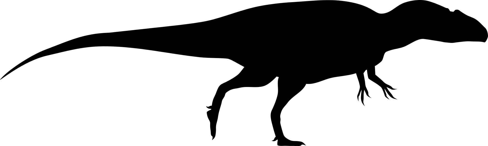
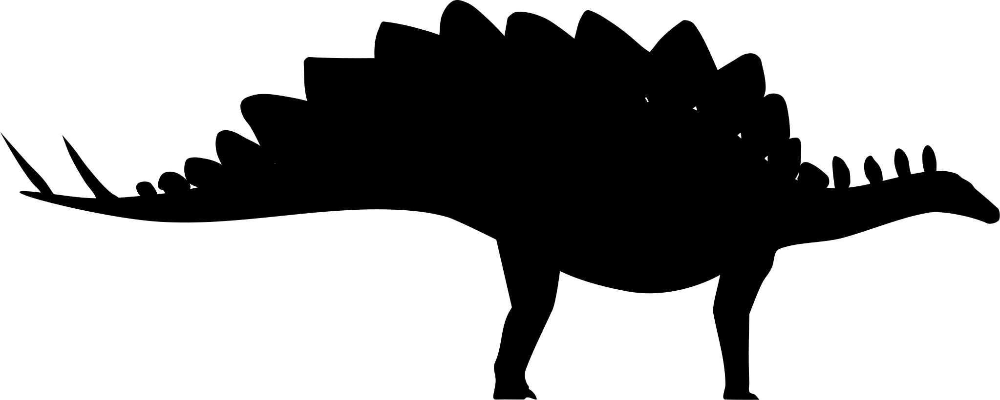

¿Dónde se han encontrado fósiles de dinosaurios?
#30DayMapChallenge; Día 28; Autor: Fernando Dorantes Nieto
Fuente: Paleobiology Database, 2025

Saurischia (Ejemplo: T-Rex)

Ornithischia (Ejemplo: Triceratops)
Arrastra para rotar • Usa la rueda del ratón para hacer zoom